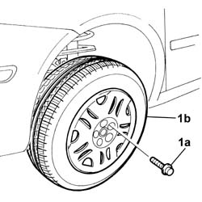
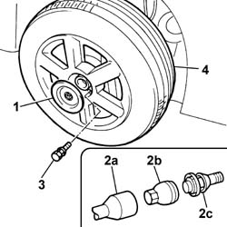

4450B02 LEFT FRONT WHEEL R R
- Path
- Procedures > 44 SUSPENSION AND WHEELS > 4450 HUBS AND WHEELS > 4450B WHEELS AND COMPONENTS > 4450B02 LEFT FRONT WHEEL R R
- Kind
- repair procedure (removal / refitting; the operation number is the code)
- Applies to
- all engines; all production periods
- Interactive page
- https://sloeber94.github.io/elrnDB-fUlss/en/#/179007401
Applies to: engines: 2.0 16v, 2.0 16V JTD, 2.2 16V JTD; all production periods
 Removing
Removing
 Refitting
Refitting- Position the vehicle on a lift.
- Remove the bolt cover using a suitable tool.
1. Undo the retaining bolts (1a) and remove the wheel (1b).

Applies to: engines: 2.0 16v, 2.0 16V JTD, 2.2 16V JTD; all production periods
Refitting
Removing- Place the wheel in position on the hub.
- Screw in the bolts fixing the wheel to the hub and then tighten them to torque.
Value daNm | Fastening | Component | Ø | |
|---|---|---|---|---|
. | 10 | Bolt | LEFT FRONT WHEEL - R.R. | - |
Place the bolt cover in position and secure it.
Remove the vehicle from the lift.
Applies to: engines: 3.0 24V V6; all production periods
2. For alloy wheels only:
Applies to: engines: 3.0 24V V6; all production periods
Removing
Refitting- Position the vehicle on a lift.
1. Remove the protective cover using a suitable tool.
- fit the special anti-theft adapator (2b) on the spanner (2a) and undo the bolt (2c).
3. Undo the retaining bolts.
4. Remove the wheel.

Applies to: engines: 3.0 24V V6; all production periods
Refitting
Removing- Place the bolt cover in position and secure it.
- Remove the vehicle from the lift.
Value da Nm | Fastening | Component | Ø | |
|---|---|---|---|---|
- | (-) 10 | Bolt | LEFT FRONT WHEEL - R.R. | - |
- Place the bolt cover in position and secure it.
- Remove the vehicle from the lift.
Topics that link to this page (22)
- 1008A42 POWER UNIT RIGID SUPPORT - GEARBOX SIDE - R.R.
- 1048A23 COLD AIR INTAKE - R R
- 1080C60 EGR SYSTEM VACUUM TANK - R R
- 2130A AUTOMATIC TRANSMISSION ASSEMBLY
- 2130A38 AUTOMATIC TRANSMISSION FLUID HEAT EXCHANGER - R + R - INCLUDING LEVEL TOP UP IF NECESSARY
- 2130B48 GEAR SELECTOR ON AUTOMATIC TRANSMISSION - R R
- 2135B72 ELECTRONIC AUTOMATIC TRANSMISSION INPUT RPM SENSOR - R R
- 2135B74 ELECTRONIC AUTOMATIC TRANSMISSION OUTPUT RPM SENSOR - R R
- 3310A59 FRONT BRAKE DISC GUARD - R R
- 3340B55 CENTRAL BRAKE PIPE TO LH - R R
- 4130B40 OUTLET PIPE FROM PUMP TO POWER STEERING CASE R R
- 4410B40 LOWER TRACK CONTROL ARM (WITH BALLJOINT) FOR LEFT OR RIGHT FRONT SUSPENSION (ONE) - R+R - CHECK WHEEL GEOMETRY SEPARATELY
- 4410C11 ROD ANCHORING END OF FRONT SUSPENSION ANTI-ROLL BAR L/H OR R/H (ONE) - R+R
- 4410A12 FRONT SUSPENSION DAMPER (ONE), LH OR RH - FOR MCPHERSON STRUT SYSTEM - INCLUDES DISMANTLING/RE-BUILDING OF ASSEMBLY AT BENCH R R
- 4450C10 FRONT STEERING KNUCKLE (ONE), L/H OR R/H COMPLETE WITH WHEEL HUB - R+R WITH WHEEL REMOVED - CHECK WHEEL GEOMETRY SEPARATELY
- 4450B04 RIGHT FRONT WHEEL R R
- 4450B06 LEFT REAR WHEEL R R
- 4450B08 RIGHT REAR WHEEL R R
- 4450B12 FRONT OR REAR WHEELS (TWO) - R+R
- 4450B14 WHEELS (FOUR) - R+R
- 4450B90 TYRE INFLATION PRESSURE SENSOR (ONE)
- 7055B65 ENGINGE BAY DUSTGUARD PROTECTION IN LEFT FRONT WHEEL ARCH R R